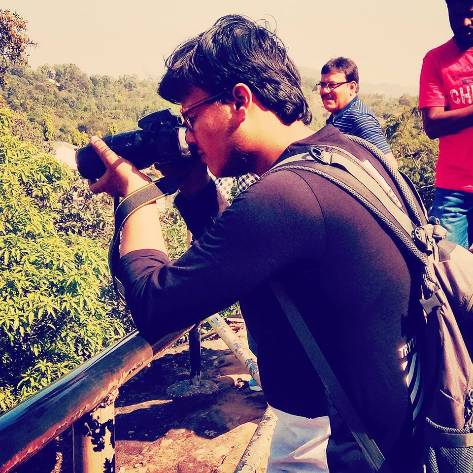

---
# You don't need to edit this file, it's empty on purpose.
# Edit theme's home layout instead if you wanna make some changes
# See: https://jekyllrb.com/docs/themes/#overriding-theme-defaults
---
Document

Home
About
Resume
Projects
Hey There i am a Tech Enthusiast .love to work in react.
Currenltly i am in my masters and working with machine Learning and Neural Networks !!
Machine Learning
I have been working on ensembles and Neural Networks especially Natural Language Processing